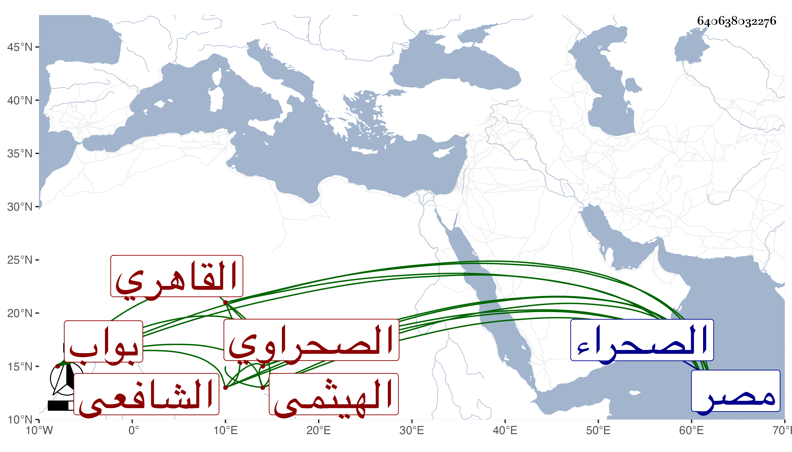

0902Sakhawi.DawLamic.ITO20230111-ara1.EIS1600.640638032276
Biography ID: 640638032276
425
عبيد بن أحمد بن علي الهيثمي ثم القاهري الصحراوي الشافعي بواب تربة برقوق ويعرف بخادم الشيخ طلحة . ولد قبل سنة سبعين وسبعمائة في محلة أبي الهيثم ثم انتقل منها إلى مصر فخدم الشيخ طلحة فعرف به ، وحج مرتين وقام بتربة برقوق بالصحراء بوابا مع محمد بن علي بن مقدم الآتي وسمع الجمال عبد الله الحنبلي وأجاز له عائشة ابنة ابن عبد الهادي وآخرون . مات قريب الأربعين أو بعدها .
